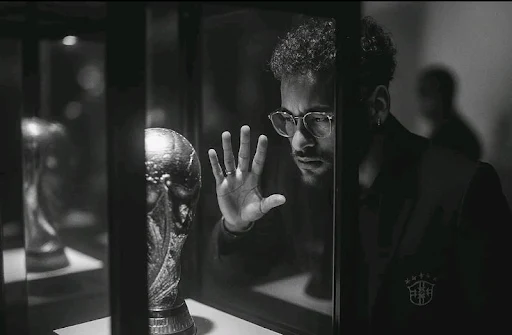
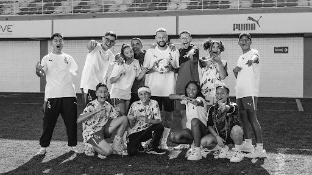
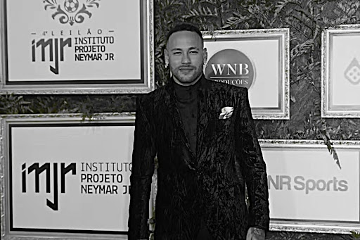

O legado dentro e fora dos campos
Neymar Jr conquistou diversos títulos ao longo de sua carreira, incluindo a Liga dos Campeões da UEFA, campeonatos nacionais e copas importantes. No Barcelona, fez parte de um dos ataques mais históricos do futebol, enquanto no PSG acumulou títulos franceses.

O Instituto Neymar Jr é um dos principais projetos sociais do jogador. Localizado em Praia Grande, o instituto atende crianças e adolescentes em situação de vulnerabilidade social, oferecendo educação, esporte e atividades culturais.

Neymar também participa frequentemente de campanhas solidárias, doações e ações humanitárias. Ele já contribuiu com hospitais, projetos sociais e iniciativas emergenciais, ajudando milhares de pessoas.
